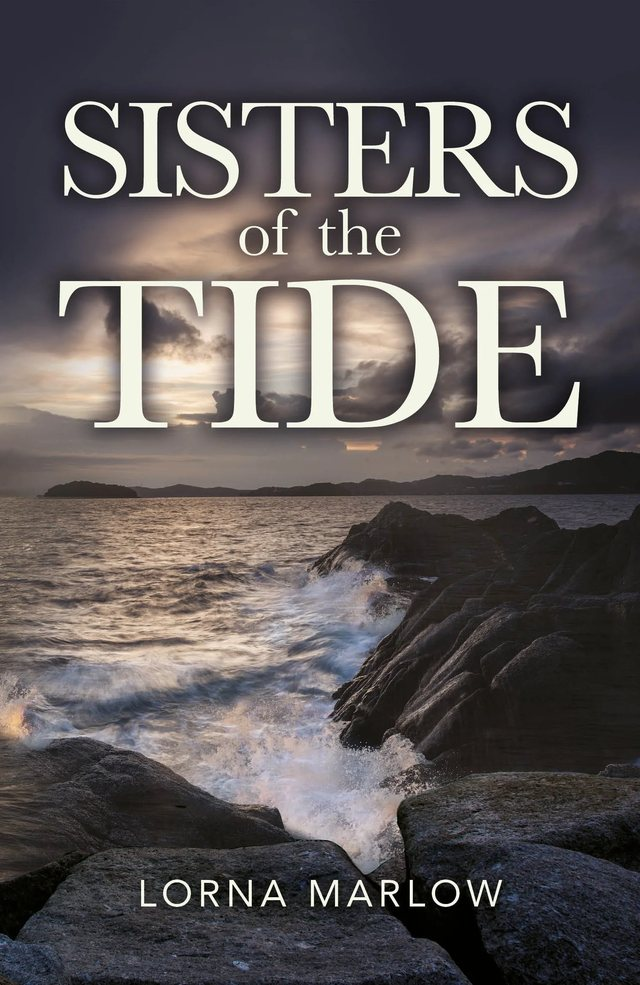
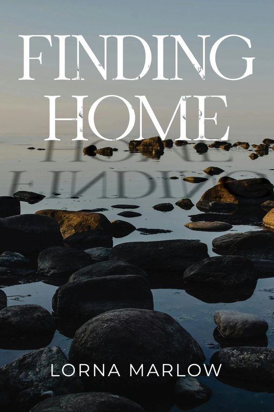
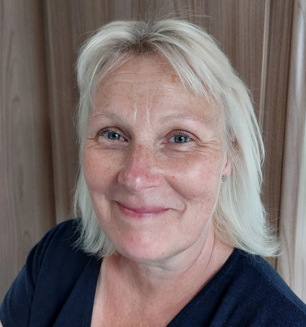

Sisters of the Tide

Emily Foster has come to Cornwall to start again. In the old cottage at Gunwalloe, with the sea at her door and her past behind her, she hopes to rebuild a life shaken by betrayal. But the cottage is not quite the refuge she imagined. A lingering presence drifts through the house, bound to the land, the sea and an old injustice that reaches across the centuries.
At Penzance Museum, Emily, tasked with arranging an exhibition on witchcraft, reveals stories she cannot forget, of women swept away on a tide of suspicion by a world that feared what it could not control.
Some stories wait generations to be told, and some voices, once awakened, cannot be silenced again.
Published 25 August 2026 in paperback and ebook

Finding Home
Her debut. In a world where silence can be deadly, Lucy Harrison is trapped in a dangerous marriage, her every move watched by a man who hides his cruelty behind a charming facade. When a mysterious inheritance offers a lifeline, she seizes the chance to flee.
Pegasus Publishers, August 2025
Lorna
I have always wanted to write. My office is full of box files crammed with half finished stories, but until recently life always seemed to get in the way. In 2022 I left a career in teaching to write full time.
All my books so far are set against the Cornish coastline. I can't live there. Being a Northamptonshire girl, I live about as far from the sea as it is possible to get in the UK, but in my imagination I visit the clifftops, bustling harbours and rock strewn shores every day.
My third novel is due in Autumn 2027, and my fourth is set in Northamptonshire, though my characters might need a little trip to Cornwall, just for fun.

Come and find me
- Sat 7 NovAuthor talk and book signingVolta Books, The Embankment, Wellingborough, 10am to 4pm
- Sun 8 NovScribe Fest ChristmasSedgebrook Hall, 10am to 4pm
- Tue 17 NovKettering U3AOpen Door Church, Eden Centre, 1.30pm. Visitors welcome.
- Fri 20 NovAuthor talk and book signingWellingborough Library, 2pm
- Sat 21 NovIsham Craft Fair11am to 3pm
- 12 and 19 DecPop up shopThe Art Emporium, Newlands Shopping Centre, Kettering, 10am to 4pm
Newsletter and news: lornamarlow.co.uk. Or find me on Instagram and Facebook.